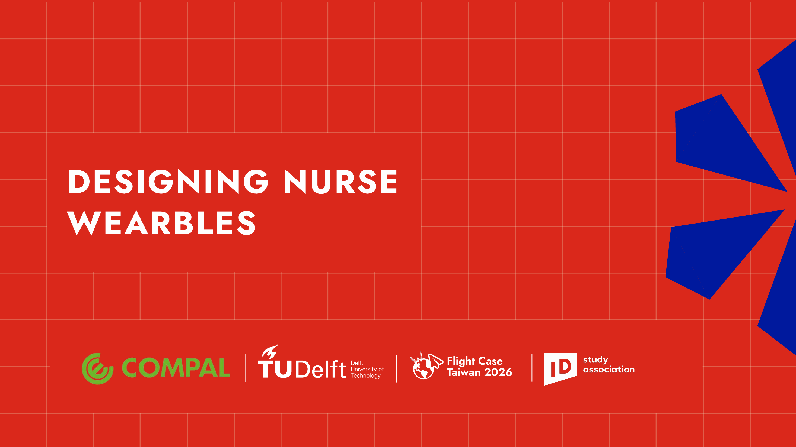
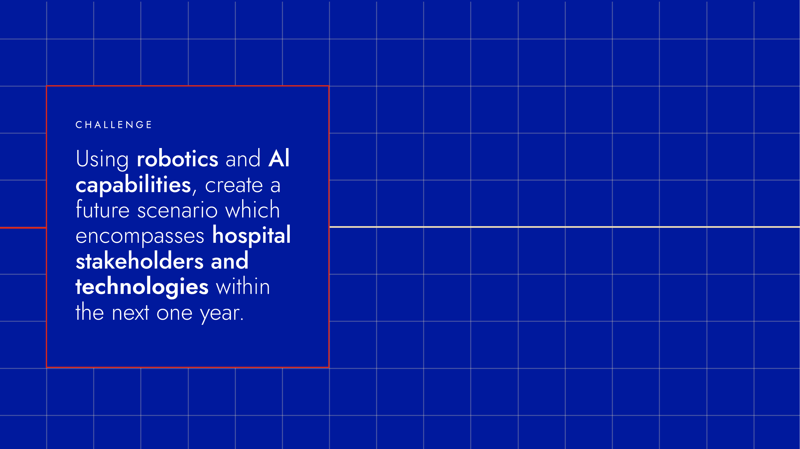

2026 - Flight Case Taiwan
Designing Nurse
Wearables.
A team project with Compal that explored a future hospital scenario for nurses, robotics and AI.
Future care,
with nurses.
In this Flight Case Taiwan collaboration, our interdisciplinary team explored how robotics and AI could support people working in hospital care.
The project used a future-oriented design brief to frame nursing work, the people involved and the technologies that could meaningfully support them.
RoleTeam member
PartnerCompal
ContextFlight Case Taiwan 2026 · TU Delft
